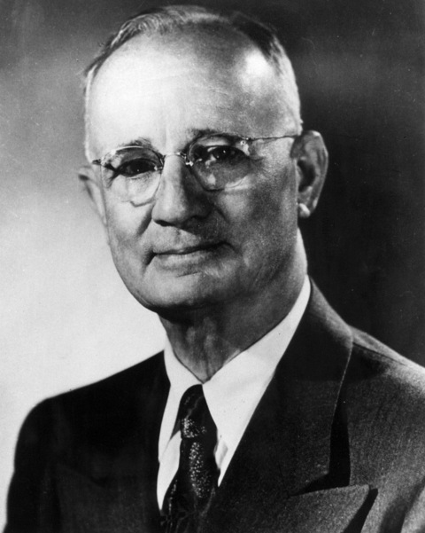

Mais Esperto que o Diabo
Napoleon Hill revela que quebrou o código mental do diabo e o forçou a confessar os seus segredos. O manuscrito que resultou deste feito - "Mais Esperto que o Diabo"- mostrou-se tão controverso, que acabou escondido por mais de 70 anos. Usando sua habilidade legendária para chegar a raiz do potencial humano, Hill cava profundamente para identificar os maiores obstáculos que enfrentamos na busca de nossas metas pessoais - incluindo o medo, procrastinação, a raiva e a inveja - como ferramentas orquestradas pelo próprio diabo. Esses métodos ocultos de controle podem levar-nos a ruína, e Hill revela os 7 princípios que eficazmente poderão combater a alienação e levar-nos finalmente ao triunfo e ao sucesso. Fascinante, provocativo e encorajador, "Mais Esperto que o Diabo" mostra como criar a sua própria senha para o sucesso, harmonia e realização em um momento de tantas incertezas e medos.
Napoleon Hill
Napoleon Hill nasceu em 26 de outubro de 1883, no Condado de Wise, nos Estados Unidos. Mais tarde, após fazer uma entrevista com o empresário Andrew Carnegie, o autor foi inspirado a escrever livros de grande sucesso. Também trabalhou em publicidade e foi consultor do presidente Franklin Roosevelt.
O escritor, que faleceu em 08 de novembro de 1970, na Carolina do Sul, foi um dos principais nomes do Movimento Pensamento Novo. Autor de best-sellers de autoajuda, publicou livros de caráter motivacional que defendem a força do pensamento, como sua obra Mais esperto que o diabo.